Échantillonnage
Comment échantillonner efficacement les populations de loutre pour quantifier la connectivité ?
Modélisation
Quelles sont les conditions écologiques à la dispersion, à l’installation des loutres et aux déplacements ?
Interactions
Comment les représentations et pratiques des humains façonnent la connectivité pour les populations de loutre ?
Médiation scientifique
La loutre peut-elle devenir une ambassadrice des zones humides pour aider à leur préservation ?
Notre équipe
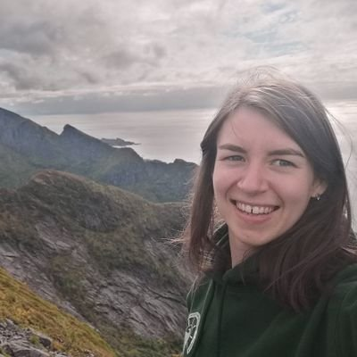
Maëlis Kervellec
Doctorante. Maëlis développe des modèles statistiques pour l'analyse de données issues de pièges photos pour quantifier la connectivité chez les grands carnivores.
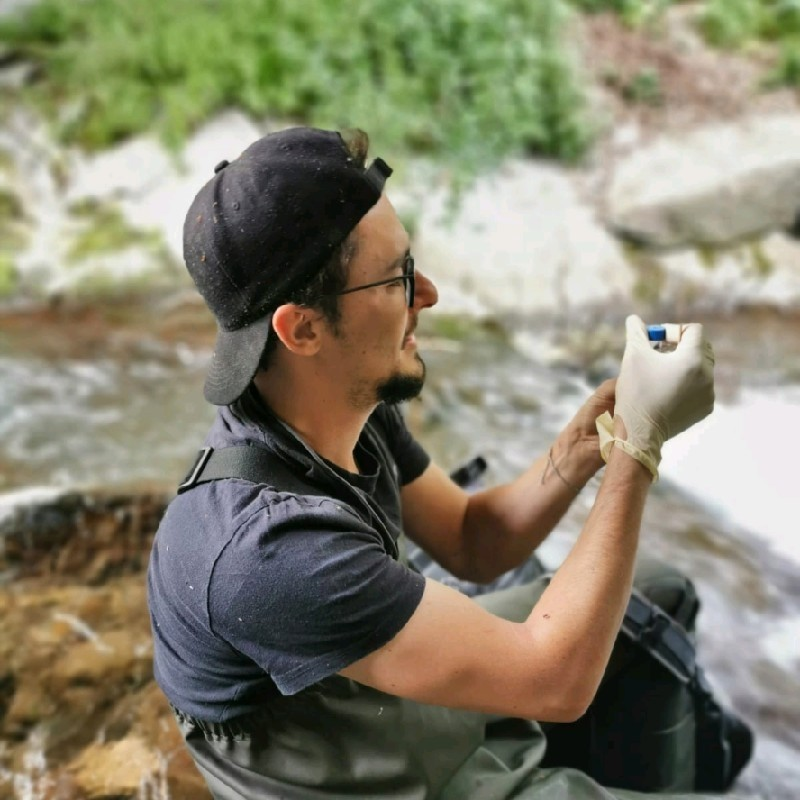
Louis Barbu
Etudiant en BTSA Gestion et protection de la nature. Louis étudie la fonctionnalité des corridors écologiques pour la loutre dans le département de l'Hérault.
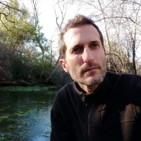
Vincent Sablain
Animateur Natura 2000 "Le Lez", chargé de gestion espaces naturels à l'EPTB Lez.
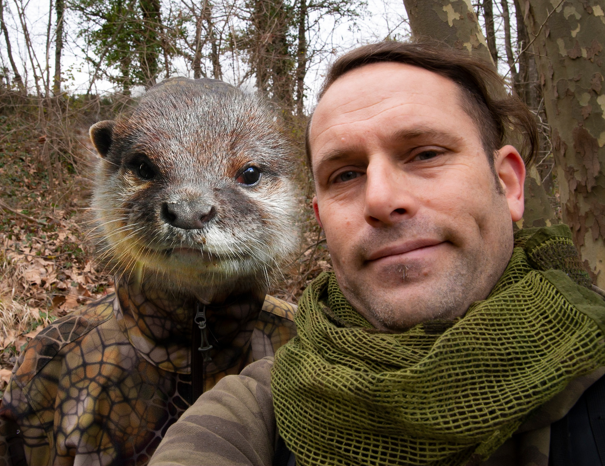
Yann Raulet
Chargé de missions biodiversité à la ville de Montpellier. Yann est passionné de photo animalière.
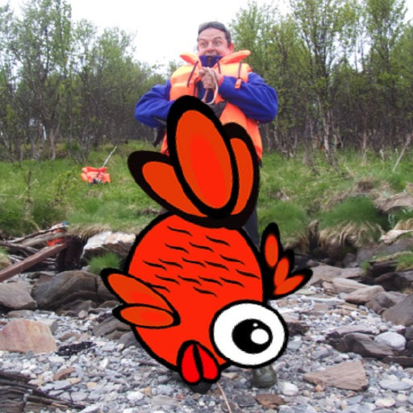
Olivier Gimenez
Directeur de recherche CNRS. Olivier est statisticien avec l'écologie des carnivores comme domaine de prédilection. Il anime le projet OtterConnect.
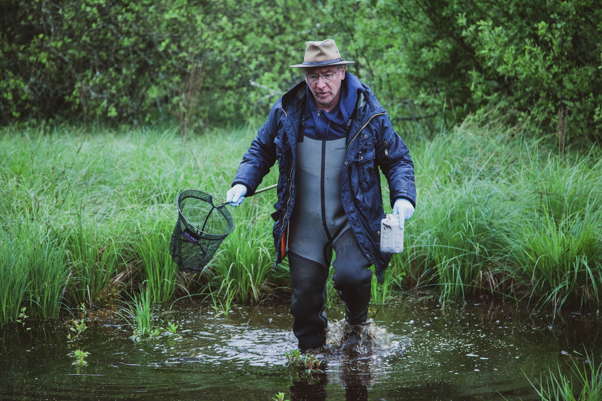
Claude Miaud
Enseignant-chercheur à l’EPHE. Claude est un hydrobiologiste, biologiste des populations de vertébrés et qui s'intéresse particulièrement aux développements méthodologiques et aux applications des méthodes de l’ADN environnemental.
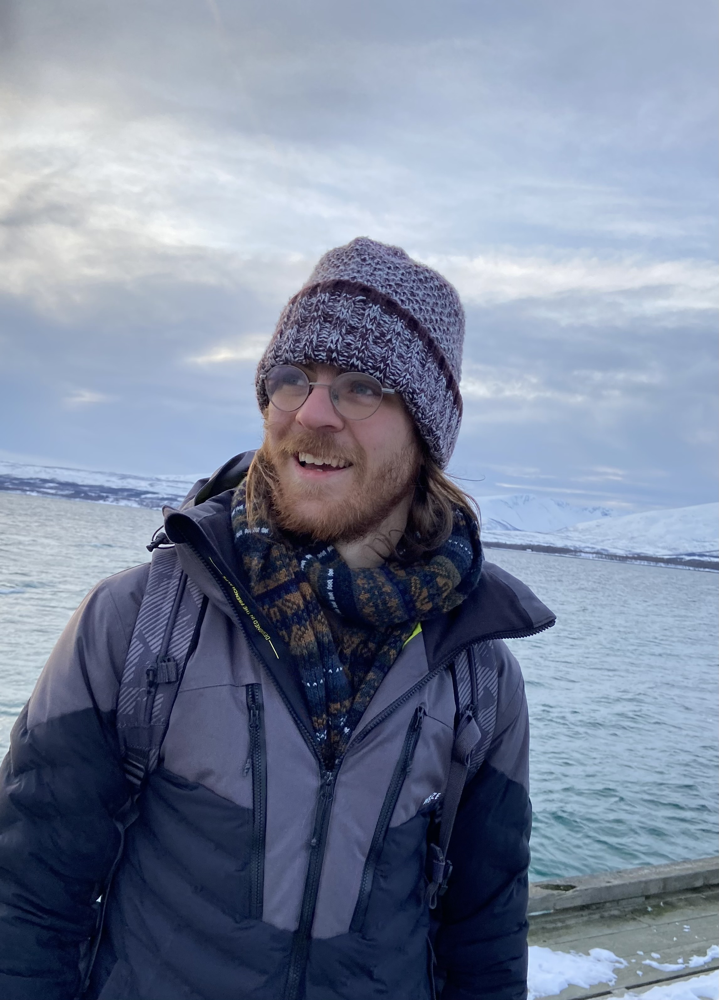
Simon Lacombe
Simon commencera un doctorat à l'Université de Montpellier en septembre 2023. Sa thèse visera à comprendre les moteurs sous-jacents à la recolonisation de la loutre en France en utilisant diverses méthodes d'écologie statistique.
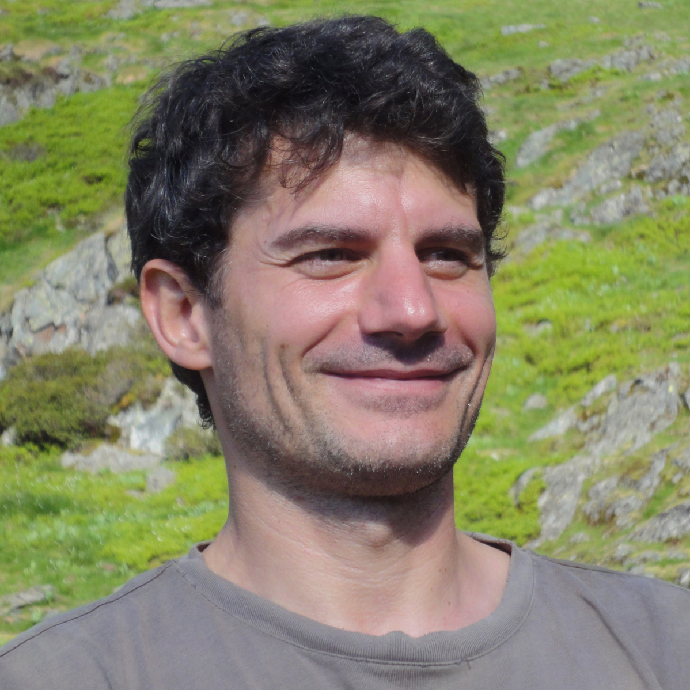
Tanguy Daufresne
Chercheur INRAE. Tanguy est écologue expert en ichtyologie et dont les travaux portent sur les interactions entre espèces et le fonctionnement des écosystèmes.
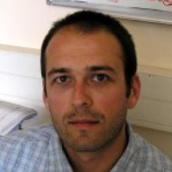
Sébastien Devillard
Maître de conférences. Sébastien est un écologue de l'évolution qui s'intéresse particulièrement à la conservation et à la gestion des carnivores mammifères.
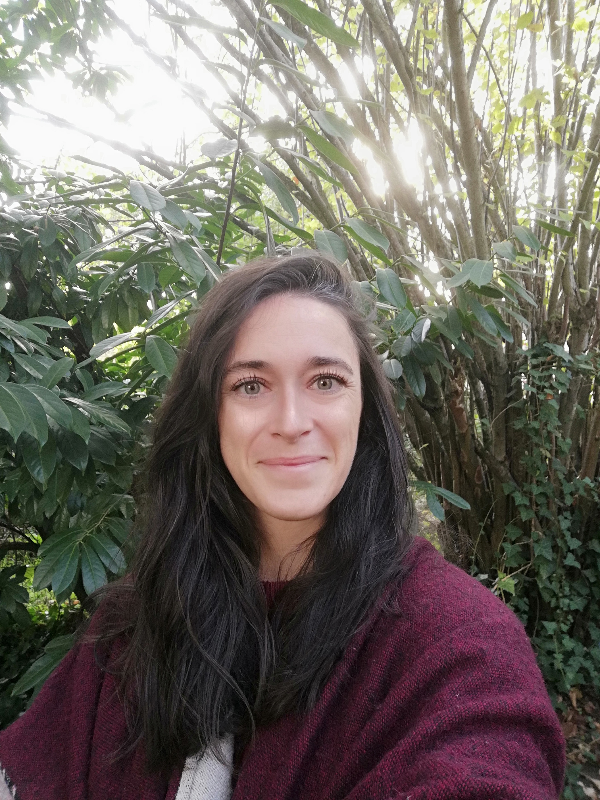
Cécile Kauffmann
Cécile est l'animatrice du Plan National d'Actions en faveur de la Loutre d'Europe 2019-2028, à la Société Française pour l'Etude et la Protection des Mammifères.
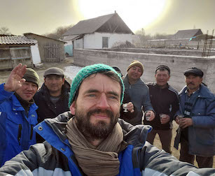
Nicolas Lescureux
Chercheur CNRS. Nicolas est ethnoécologue et travaille sur les savoirs locaux sur les animaux.
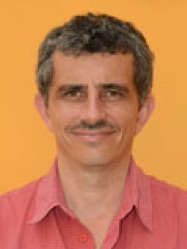
Raphaël Mathevet
Chercheur CNRS. Raphaël est géographe et travaille à la conservation de la biodiversité, des aires protégées et sur l'évaluation des politiques publiques.
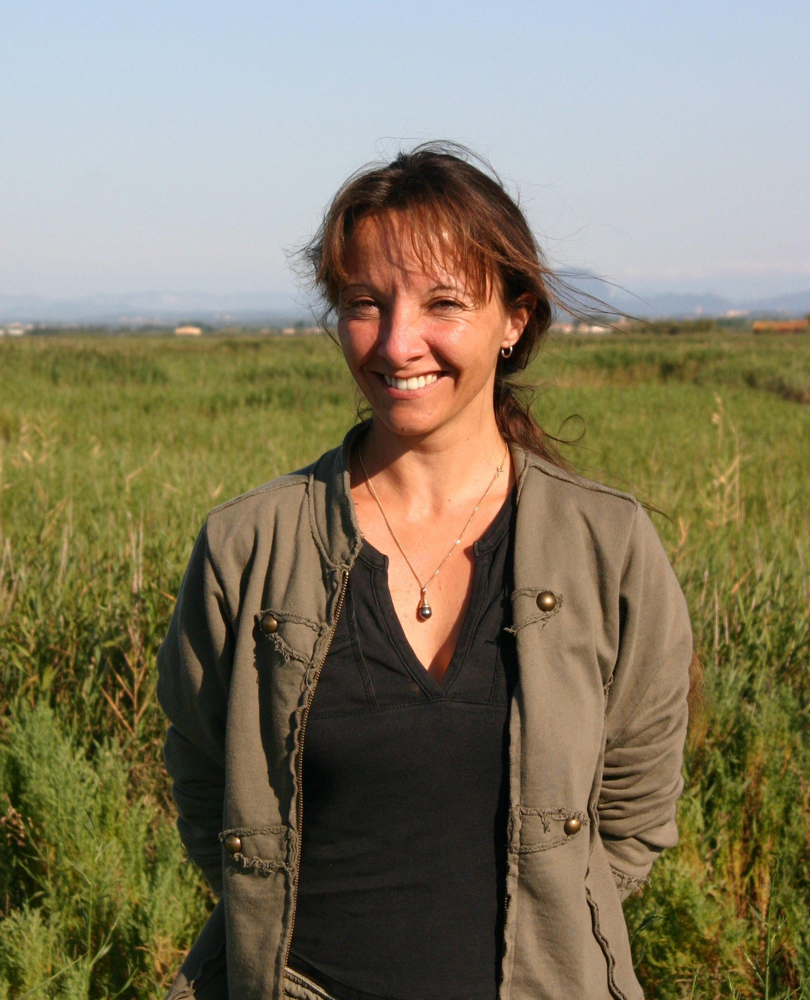
Eve le Pommelet
Chargée de projets biodiversité EPTB Bassin de l'Or. Animatrice Natura 2000 "Etang de Mauguio".
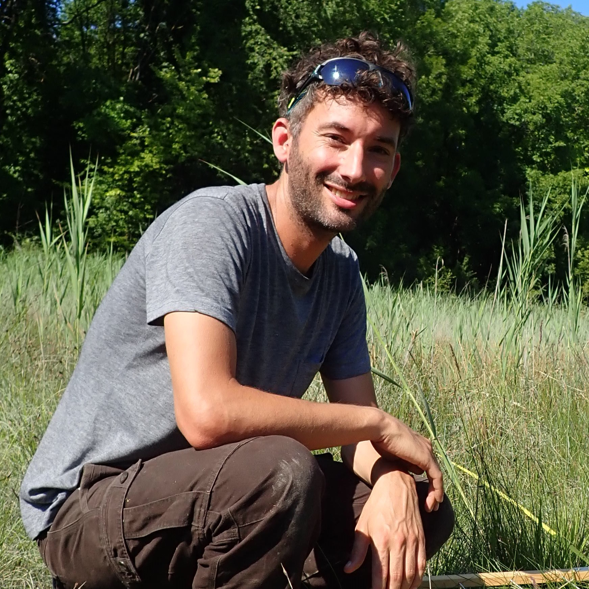
Thibaut Couturier
Ingénieur. Thibaut accompagne les aires protégées dans l'élaboration de protocoles d’étude faune-flore (coopération OFB-CNRS).
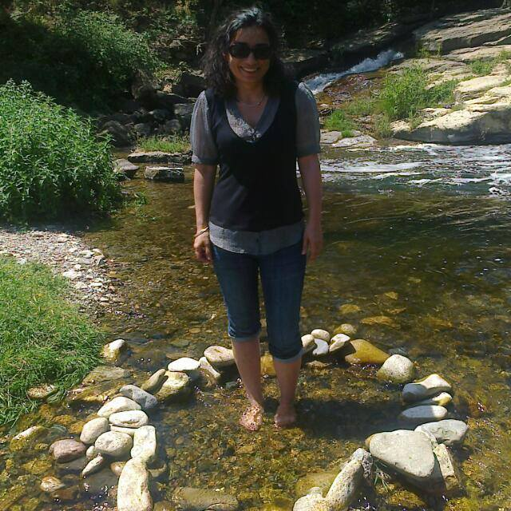
Frédérique Roman
Chargée de mission planification au sein de l’EPTB Orb Libron.
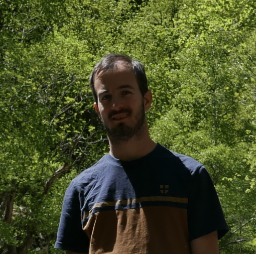
Clément Oyon
Chargé de Mission à l’EPTB Vidourle.
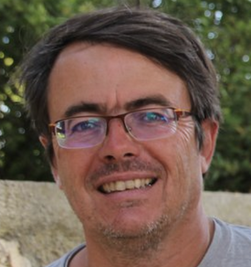
Serge Rouvière
Chargé de Mission à l’EPTB Vidourle.
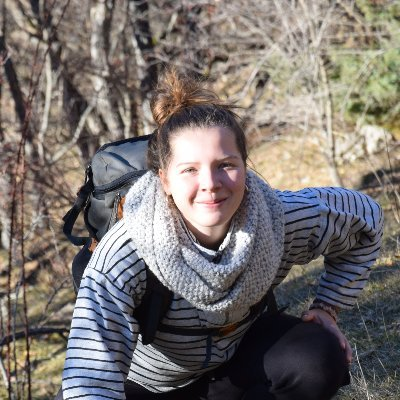
Tatiana Tronel
Naturaliste. Volontaire service civique avec les Ecologistes de l'Euzière. Tatiana a participé au travail de terrain sur le Lez et l'Or.
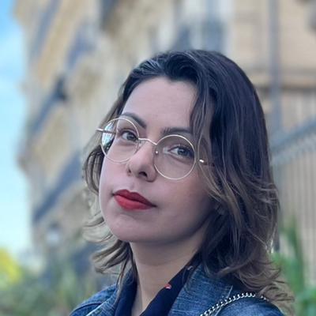
Caroline Delaire
Stagiaire Master en médiation scientifique.
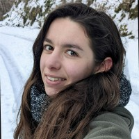
Louise D'Hollande
Stagiaire Master en écologie.
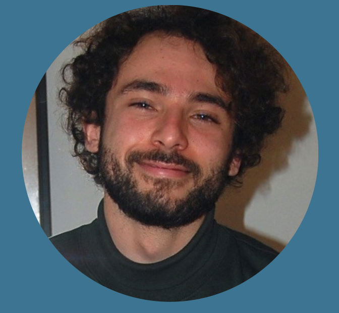
Lazare Duval
Stagiaire Master en géographie animale.
Tom Carli
Stagiaire Bachelor en écologie.
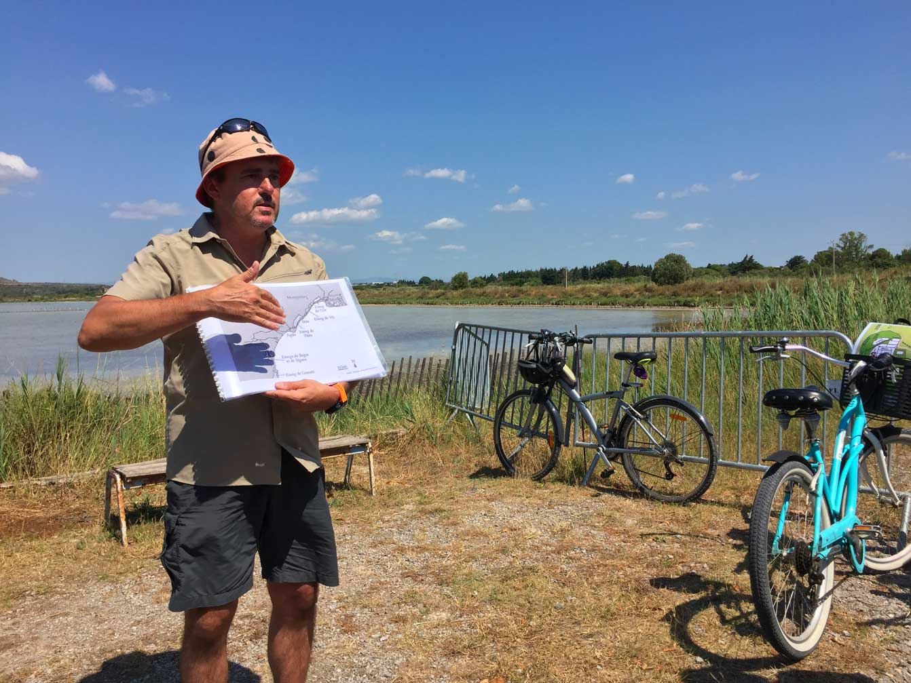
Sébastien Ranc
Médiateur scientifique et naturaliste au CPIE APIEU.
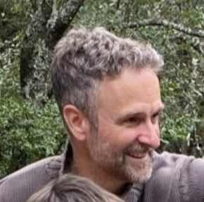
Alexandre Dubost
Médiateur scientifique et naturaliste au Centre Ressources Éduc Nature, domaine de Restinclières.
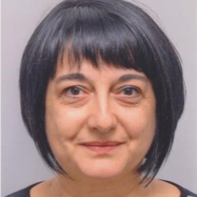
Paula Dias
Chargée de Mission Dialogue Science-Société au CEFE.
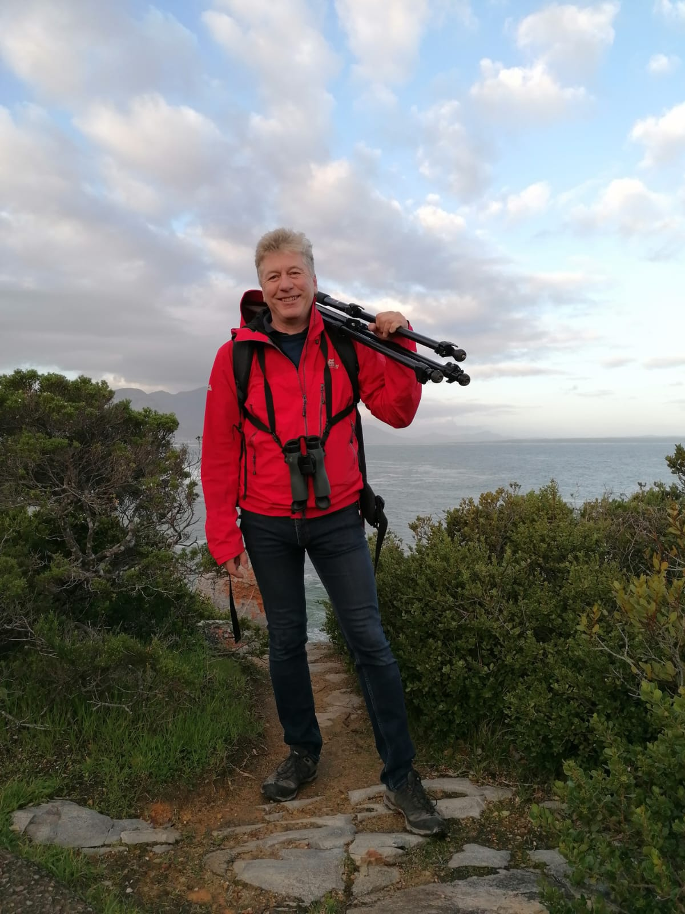
Johan Michaux
Directeur de recherches au Fonds National de la Recherche Scientifique belge, et directeur du laboratoire de génétique de la conservation de l’Université de Liège dont l’objectif est d’étudier et préserver les espèces menacées. Johan développe également de nombreuses activités de vulgarisation scientifique.